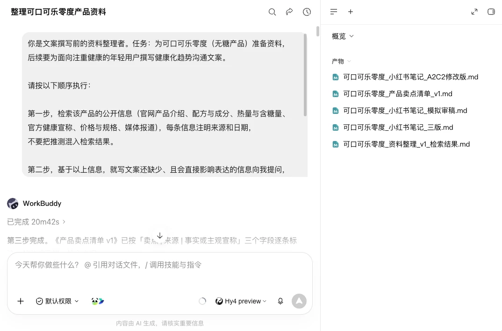

第一部分｜零经验写出两篇鲜明文案
01｜两篇文案
同一份产品资料，怎样写出不同的购买理由？先看零度可乐的两篇文案。
下面两篇小红书文案都由 AI 撰写：一篇从健身房里的个人体验切入，一篇从聚会订餐切入。先看它们怎样使用同一份产品事实。
- 1-第一人称体验（健身房日记口吻）
- 2-场景社交向（聚会订餐时）
02｜用成果管理AI
没写过商业文案，也可以逐步检查。关键是让 AI 每一步都交出能看、能改的成果。
经验一：让AI一步一交付
一口气拿到终稿，往往看不出问题从哪一步开始。我们让 AI 依次交出整理后的资料、卖点清单、候选文案、审稿报告和修改稿。发现问题，就回到对应成果修改，已经确认的部分可以继续用。
经验二：把关键选择留在人手里
AI 可以帮你查资料、汇总信息。哪些说法能用，哪个版本值得继续，还要由你决定。这个案例中的产品疑点，最后也是人对照实物标签才确认的。流程能帮助初学者把工作拆开，事实和取舍仍要自己检查。
经验三：允许方向被淘汰
多写几个方向，是为了有得选。在这个案例的三个方向中，有一个没有继续做：事实表达更干净，但知识密度、语气和行动引导都偏离任务，继续修改几乎等于重写。于是把它归档，集中修改另外两版，形成了开头展示的成果。

第二部分｜AI商业文案三步法
03｜把写作变成决策
用 AI 写商业文案，要一步步选对读者、卖点、表达方向和行动。
文案要先选对方向，再打磨句子。比如读者选错了，后面写得再顺，也可能回答了对方不关心的问题。前面的选择，会影响后面的表达。
让 AI 提供候选方向，也把遗漏、冲突和风险列出来。你再按产品事实和业务目标选择，检查这篇文案是否始终对着同一位读者、讲清同一个价值、推动同一个行动。
04｜AI访谈与提炼
让AI把信息问全
动笔前先补清会影响文案的问题，可以减少整篇返工。
只给 AI 一个产品名，再说“写得有吸引力”，它可能把没说清的地方猜成细节。别只看文字是否流畅，先确认产品和任务信息是否齐全。
把手里的东西全摊开
把产品介绍、参数与配料、实物照片、已有反馈和来源交给 AI。缺的内容就标“待补充”，让你知道还要找什么，不让它用猜测填满。
把这次生意说清楚
再告诉 AI：写给谁、在哪个场景和渠道出现、最多多长、希望读者查看详情还是咨询、报名、购买或到店。涉及价格、促销或健康表达的限制，也一起说清。
让 AI 追问最影响写作的空白
让 AI 先问三至五个关键问题，优先补清产品版本、核心用户、使用场景、证据来源和渠道限制。回答后，检查它能否说清：为谁写、写什么、在哪发布、希望读者做什么、哪些话不能说。
建立产品卖点清单
资料问清了，先筛出能用的卖点，再考虑怎样表达。
每条卖点先查两件事：谁提供的，能否核对。让 AI 把资料和访谈回答整理成清单，逐条记录卖点、来源、可用等级和待核对事项。
有依据，才有资格进文案
产品参数、价格、活动规则和标签信息，找到明确依据后才能进入候选稿。写数字时，同时保留年份和规格，避免换了对象还沿用旧数据。
只有感受，就老老实实写成“我”
口感、气味这类体验因人而异。有体验者提供的材料，就用“我觉得”“我使用时感到”表达，别把个人感受写成所有人都会得到的效果。
没有依据，就先拦在门外
资料互相矛盾，或说法容易暗示未经证实的功效，就先留在清单里，补齐依据再判断。
一句卖点想进文案，先把能核对的依据带上。 如果包装标签、合同或官方页面能回答疑点，就由你核对原件，再让 AI 更新清单。涉及产品信息、健康表达、法规和标准时，尤其要确认依据。
05｜AI多版创作
先设计版本差异
卖点确认后，让几个版本从不同角度出发，推动同一个行动。
多版创作可以换目标读者，也可以换场景或诉求。若三个版本只换标题、形容词和语气，读者得到的购买理由还是一样的。
先锁住不能变的东西
先固定已确认的产品事实、发布渠道和目标行动。某一版需要新卖点，就先回到卖点清单核对，不能在正文里直接添上。
再挑一个真正分叉的地方
可以改变读者方向、核心诉求、使用场景或表达身份。需要比较版本时，一次主要改变一个维度，其他条件保持一致，才能看出差异究竟来自哪里。
每个方向先说清“靠什么赢”
写正文前，用一句话记录每版的方向：从哪里切入、用哪个卖点、推动什么行动。这就是后面检查用的方向卡；先分清方向，再展开正文。
多版创作让几版各说各的理，事实和目标行动不变。
写出多版并自检
多版正文写出来，还要让 AI 说明每句话用了什么依据。
- 逐版成稿：每版都要有适合渠道的标题、正文和行动引导，能够独立拿出来阅读。
- 逐版交底：让AI标出事实陈述、主观感受和行动引导，并说明分别来自卖点清单的哪一项。
- 当场抓越界：扫一遍禁止表达、待核对数据和突然冒出的新事实，有疑点就标出来。
- 证明差异：一句话说清每一版靠什么打动人。标题与正文还能互换，说明方向还没真正拉开。
把几版放在一起，先比较说服理由是否不同，再选哪一版最适合这次任务。
06｜AI模拟审稿
让三种角色找问题
文案写好了，换三个角度读一遍，让 AI 找出读者会疑惑、审核者会追问的地方。
作者了解产品和背景，读者却未必知道。模拟审稿，就是让 AI 暂时站到不同读者的位置，提前找出看不懂、不信服或不知道下一步怎么办的地方。
路过的人
他只给你几秒：这是什么，和我有什么关系，要不要接着往下看。
心动但迟疑的人
他已经有点兴趣，可还在犹豫值不值，也怕下一步太麻烦。
事实审核者
他不管文案多动人，只拿卖点清单逐句核对数字、产品名称、规格、效果宣称和待核对内容。
第一轮先列问题，别让 AI 直接重写。每条意见写清版本、角色、问题句和原因，你才能逐条决定怎么处理，而不是拿到新稿后又从头检查。
模拟审稿先留下问题，别让一篇顺滑的新稿把疑点盖过去。
从问题走到定稿
处理审稿意见时，留下值得继续的版本，逐条解决问题，保住已经成立的方向。
先给问题找源头
事实有疑点，回到卖点清单；方向偏了，回到方向卡；只是措辞有歧义，就改当前版本。先找问题来自哪一步，再决定改哪里。
再按问题逐条修改
按照问题清单逐句修改，每一次修改都要能指向一条具体的审稿意见。
最后确认问题都已处理
改完再检查事实、禁止表达和三个角色的疑问。数字、标签、活动规则等关键内容，由你对照原始材料确认；检查修改有没有引入新问题，再定稿。
第三部分｜三种文案任务，即拿即用
07｜迁移商业文案方法
换成详情页、视频脚本或海报，仍然先提炼卖点、再生成多版、最后模拟审稿。下面的提示词可以按任务选用。
08｜电商产品详情页
让AI把产品功能讲清楚，再把购买理由和下一步行动接起来。
我要为[产品名称]撰写电商产品详情页，目标用户为[用户画像]，希望读者完成[购买／咨询等行动]。产品资料如下：[粘贴产品介绍、参数、价格、用法、注意事项和来源]。
请按以下步骤完成：
- 检查资料是否足以写作。缺少会影响产品理解、购买判断或风险提示的信息时，先向我提出不超过5个问题，等我回答后继续。
- 建立产品卖点清单，字段为“卖点｜来源｜事实或主观感受｜可直接写、需核对或不能用”。资料没有涉及的内容标注“待补充”，不要自行补写。
- 提出三种详情页方向，每种说明目标读者、核心诉求、内容顺序和行动引导。我确认方向后再生成正文。
- 按确认方向撰写详情页，包含核心卖点、功能说明、使用场景、规格参数、注意事项和购买指引。完成后分别以初次接触者、犹豫中的用户和事实审核者身份只列问题，再根据问题逐条修改，并附“原文｜改后｜对应问题”对照表。事实描述与效果宣称始终分开表达。
09｜短视频口播脚本
让AI在有限时间里抓住一个卖点，并把语言、画面和行动对齐。
我要为[产品名称]制作一条[时长]的短视频口播，发布平台为[平台]，目标观众为[人群]，希望观众完成[点击、咨询、购买等行动]。产品资料如下：[粘贴产品资料和来源]。
请按以下步骤完成：
- 检查产品资料、时长、目标观众和行动要求是否完整。缺少关键信息时先向我提问。
- 建立可用卖点清单，区分有依据的事实、只能用第一人称表达的体验和不能使用的说法。
- 提出三种脚本方向，每种只选择一至两个核心卖点，并说明开头钩子、证明方式和结尾行动。我确认后再写完整脚本。
- 输出“时间段｜口播｜对应画面｜屏幕文字”四列表格，确保正常语速能够在[时长]内说完。完成后分别从首次观看者、犹豫者和事实审核者角度找问题，检查前3秒是否看懂、卖点是否有依据、画面是否支持口播、结尾行动是否明确，再按确认意见定向修改，不引入新事实。
10｜海报与社媒短文案
让AI用更少的字完成识别、理由和行动。
我要为[产品或活动名称]制作[海报／朋友圈／社媒帖子]短文案，目标读者为[人群]，发布场景为[场景]，希望读者完成[报名、到店、咨询、购买等行动]。事实资料如下：[粘贴产品或活动信息、来源和限制]，字数限制为[字数]。
请按以下步骤完成：
- 核对名称、时间、地点、价格、规则、产品信息和行动入口。缺少会影响参与或购买的信息时先向我提问，不要自行补写。
- 将信息分成“必须出现、可以辅助、不能使用”三类，并说明判断理由。
- 生成五组“主标题＋副标题＋行动按钮”文案，分别从直接利益、使用场景、具体事实、情绪共鸣和问题切入。五组必须拥有不同的说服理由。
- 以第一次刷到内容的读者和事实审核者身份评价每组文案，检查能否立刻认出对象、理解理由并找到行动入口。推荐最值得保留的两组并说明取舍，在我确认后逐条修改。
11｜固化自己的Skill
把验证过的流程写进Skill，下一次换产品也能从同一套底线开始。
下一次换产品，更新资料、读者、渠道和行动目标，就能沿用追问、分级、多版和审稿的规则。把这次跑通的流程写进 Skill，省下重复解释方法的时间。
请把下面的工作方法整理成一个可复用的“AI商业文案”Skill：
这个Skill只处理产品详情页、短视频口播、海报和社媒商业文案，不处理新闻稿、合同、医学建议和真实广告投放效果预测。
每次运行时，先读取用户提供的产品资料、事实来源、目标读者、发布渠道、篇幅限制和目标行动。关键信息不足时，提出不超过5个问题，等待回答后继续。
第一阶段建立产品卖点清单，将信息标为“可直接写、只能作为主观感受写、不能用或待核对”。第二阶段基于同一份清单提出三种说服方向，等用户确认后生成多版文案。第三阶段分别以初次接触者、犹豫者和事实审核者身份只列问题，再根据用户选择逐条修改。
全程不虚构产品特性，不把主观体验写成事实，不使用待核对信息，不自行改变价格、时间、规格和活动规则。最终交付卖点清单、方向说明、候选文案、审稿问题、修改对照和定稿。
请输出一份完整的SKILL.md，包含触发范围、所需输入、执行步骤、检查规则、交付格式和不处理事项。规则写成AI可以直接执行的指令，不添加空泛原则。
小结
- 先把“好听”和“能说”分开：AI负责把资料问全、把卖点摊开，人决定哪些话有依据、哪些话必须停在清单里。
- 让几个方向真正竞争：同一份事实能写出好几个完全不一样的版本，AI负责打开选择，人负责留下最值得继续的方向。
- 敢于淘汰，也敢于回头：审稿发现问题就回到对应环节修，方向偏了就归档，事实有疑点就重新核对。
试着用同一份产品资料写两个场景的文案，检查事实有没有变化、说服理由是否不同。AI 帮你提供选择，你用事实和读者需求决定留下哪一版。